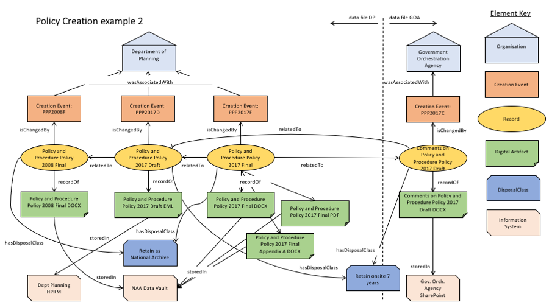

This web page contains some examples of queries that are facilitated by a particular kind of data model, an OWL ontology. Simple Linked Data mechanisms are used to get data and then SPARQL queries are run against it.
The functions here demo some elements of the AGRIF Ontology. The data used here is the "policy creation 2" example data from the ontology's documentation code repository online at https://github.com/AGLDWG/agrif-ont/tree/master/examples. A diagram of the data used here is shown in Figure 1 below.

Figure 1: An OWL diagram of the example data used for this demonstration. All classes and properties are defined in the AGRIF ontology
We load the data that will make Figure 1 from two remote sources (two RDF files in GitHub) that emulate data being published by two different government agencies, the fictional Department of Planning and the Government Orchestration Office
✓Data from https://raw.githubusercontent.com/AGLDWG/agrif-ont/master/examples/policy-creation-2-dp.ttl
Data from https://raw.githubusercontent.com/AGLDWG/agrif-ont/master/examples/policy-creation-2-goa.ttl
We now combine the data from the two agencies into a single graph on which we will run a series of queries.
Triples parsed from files and loaded into a graph store: 0
Here we wish to find all the ancestors from which Record "Policy and Procedure Policy 2017 Final" was derived. We run a path following SPARQL query against the information graph in order to find ancestors at any number of steps from the target Record:
We wish to check that all the Artefacts in the graph are stored according to the Disposal Class of their associated Record. In this example, Records incicated as needing their Artefacts "Retained As National Archives" must have Artefacts stored within the "NAA Vault" System.
If we wanted to understand what information, conceptually, was stored in a particular system, we could look at all the Artefacts in that system and relate them to their associated Record. Here we query the NAA's "Vault" to see what Records are associated with Artefacts stored there.
Please refere to the AGRIF ontology and its documentation for further examples and author contact information.